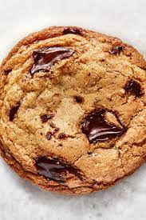

Description
This recipe is all about chocolate chip cookies!
Ingredients
- All Purpose Flour
- Unsalted Butter
- 70% Dark Chocolate Bar
- Sugar
- Dark Brown Sugar
- Ice Cube
- Kosher Salt
- Baking Soda
- Eggs
- Vanilla Extract
Cooking Steps
- First we're going to make browned butter. Put two sticks of unsalted butter into a pan and let it on low medium. Constantly stire the butter until the color becomes brown, and once that happens take it off the heat and put an ice cube into it.
- Next up get a bowl and put 1 and 1/2 cup of dark brown sugar, 1/2 cup of sugar, 2 tsp of salt, 1/4 tsp of baking soda, 2 tsp a vanilla extract, and 2 eggs into it.
- Mix everything in the in the bowl together and then mix in 2 and 1/2 cups of all purpose flour.
- Take your chocolate bar and chop it into different sized pieces.
- Put all the chopped chocolate into the bowl and finish mixing it all together.
- For best results shape the cookie dough into individual sized balls and let it sit in the frdige for up to 2-3 days.
- Lay the cookie dough on parchment paper and cook it in the oven for 20 minutes at 300 fahrenheit. Once done let the cookies rest for 5-10 minutes.